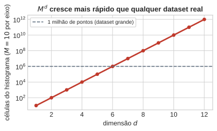
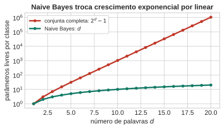
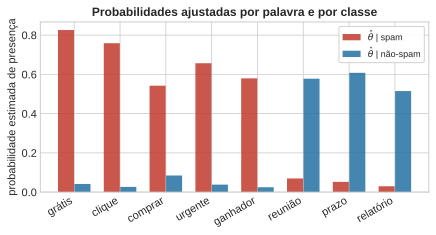
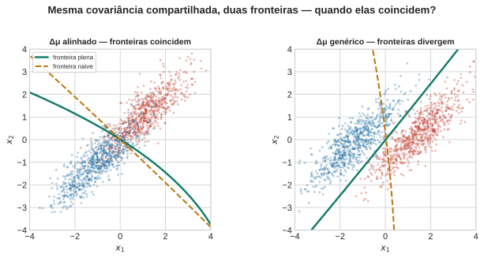
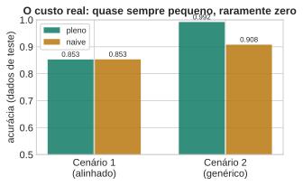

flowchart LR
pi["priori π_k"] --> esc["a natureza escolhe 𝒞_k"]
esc --> x["gera x ~ p(x ∣ 𝒞_k)"]


Aula 2 — Fundamentos Estatísticos do Aprendizado Supervisionado
2026-08-10
A Aula 1 provou uma receita sem usar a dimensão de \(x\) em lugar nenhum.
Ela funciona em alta dimensão? É só trocar \(x\) por \(\mathbf{x}\)?
A regra continua ótima. O problema é estimar o objeto do qual ela depende, não a regra em si.
Histograma multidimensional: \(M\) células por eixo, \(d\) eixos \(\Rightarrow\)
\[ M^d \text{ células} \]
\(d=1\): \(M=10\) células bastam. \(d=10\): \(10^{10}\) células — mais que qualquer dataset real.
Não é falta de poder computacional. É falta de dados — o problema é estrutural, não de engenharia.

Generaliza sem atrito para \(K\) classes:
\[ p(\mathcal{C}_k \mid \mathbf{x}) = \frac{p(\mathbf{x}\mid\mathcal{C}_k)\,\pi_k}{\sum_j p(\mathbf{x}\mid\mathcal{C}_j)\,\pi_j} \]
Regra ótima: \(\arg\max_k p(\mathbf{x}\mid\mathcal{C}_k)\,\pi_k\) — a prova da Aula 1 nunca usou \(K=2\).
flowchart LR
pi["priori π_k"] --> esc["a natureza escolhe 𝒞_k"]
esc --> x["gera x ~ p(x ∣ 𝒞_k)"]
Spam: \(\mathbf{x}\in\{0,1\}^d\), presença/ausência de \(d\) palavras.
Sem estrutura: \(2^d-1\) parâmetros por classe. Com \(d=20\): mais de 1 milhão.
Naive Bayes — independência condicional dada a classe: \[ p(\mathbf{x}\mid\mathcal{C}_k) = \prod_{i=1}^d p(x_i\mid\mathcal{C}_k) \]
flowchart TD
C(("𝒞_k")) --> x1["x₁ (\"grátis\")"]
C --> x2["x₂ (\"reunião\")"]
C --> x3["x₃ (\"urgente\")"]
C --> xd["x_d"]


Mesma armadilha da Aula 1: palavra nunca vista numa classe \(\Rightarrow\) \(\hat\theta=0 \Rightarrow \ln 0 = -\infty\). Correção: suavização de Laplace (\(+1\) no numerador, \(+2\) no denominador).
Decisão: comparar \(\log\dfrac{p(\text{spam}\mid\mathbf{x})}{p(\text{não-spam}\mid\mathbf{x})}\) contra zero — uma soma de termos, um por palavra.
Palavras correlacionadas existem. Naive Bayes finge que não.
O que essa suposição falsa custa?
Trocamos para 2 atributos contínuos e correlacionados, mesma \(\Sigma\) nas duas classes. Dois ajustes: pleno (\(\Sigma\) completa) vs. naive (só a diagonal de \(\Sigma\)).

Cenário 1 (\(\Delta\mu\) autovetor de \(\Sigma\)): fronteiras coincidem — a suposição não custa nada aqui.
Cenário 2 (\(\Delta\mu\) genérico): fronteiras divergem.
Condição exata: coincidem \(\iff\) \(\Delta\boldsymbol\mu\) é autovetor de \(\Sigma D^{-1}\), \(D=\text{diag}(\Sigma)\). Mesmo coincidindo, as posterioris podem diferir.

Regra \(\delta:\mathbf{x}\mapsto a\in\mathcal{A}\) (espaço de ações, não necessariamente de classes). Perda \(L(k,a)\). Risco posterior:
\[ \rho(a\mid\mathbf{x}) = \sum_k L(k,a)\,p(\mathcal{C}_k\mid\mathbf{x}) \]
\[ \delta^\star(\mathbf{x}) = \arg\min_a \rho(a\mid\mathbf{x}) \]
\[ c_{\mathrm{I}}\,p(\mathbf{x}\mid\mathcal{C}_A)\pi_A \gtrless c_{\mathrm{II}}\,p(\mathbf{x}\mid\mathcal{C}_B)\pi_B \]
Toda decisão binária = teste de razão de verossimilhanças contra um limiar que só depende de custo e priori.
\(\Sigma\) compartilhada (plena ou diagonal) \(\Rightarrow\) os termos \(\mathbf{x}^\top\Sigma^{-1}\mathbf{x}\) cancelam:
\[ \mathbf{x}^\top\Sigma^{-1}(\boldsymbol\mu_A-\boldsymbol\mu_B) + \text{const} \]
Linear porque a covariância é compartilhada, não porque é diagonal. A naive só erra a direção, nunca a linearidade.
Mesmo mecanismo no spam: atributos binários \(\Rightarrow\) soma linear de termos por palavra.
Ótima dado o modelo — não garante que o modelo esteja certo. O bloco anterior mostrou exatamente essa lacuna.
Fronteira linear, decidida antes dos dados. Árvores (Aula 3): sem suposição paramétrica, fronteira construída greedily a partir dos dados. O preço da liberdade é o assunto de lá.
UNICAMP — Instituto de Computação